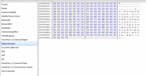

Converting PowerPoint to SVG: Help Needed
Software Carpentry has 110 PowerPoint files, each containing between 20 and 120 slides–call it 5000 slides in total. I’d like to convert them to HTML5 for use with Slide Drive, the deck.js+audio slideshow tool that David Seifried is building. Here’s the breakdown:
- A few bugs in the slide decks need to be fixed–it's a fairly small job.
- I already have audio recordings narrating the slides. A few will need to be redone to sync with bug fixes in the slides, but that's a fairly small job.
- I also have transcripts of those recordings. They'll need corresponding edits, and reformatting, but again, that's fairly small.
- I don't have time-marks synchronizing the audio with the slides. I'm sure that information is embedded in the Camtasia project files I created when making the current videos, but I don't know how to get it out (yet).
- Exporting the main text in the slides (the bullet points) is straightforward, though a fair bit of manual touch-up will be needed to reformat it.
- Ditto for the code samples (which don't show up with the main text, since they're in separate text objects).
And then there are the diagrams… Roughly a third of the slides have diagrams of some kind, which makes about 1500 in all. That’s too many to redraw, and anyway, I shouldn’t have to: they’re stored in PowerPoint in some kind of vector format, so I should be able to “export as SVG” or the moral equivalent thereof.
But “should” and “can” aren’t the same thing. I can save my PowerPoint in a lot of different raster image formats, but not in a vector format like SVG. However, I can select elements of a diagram, copy them, and then paste them into a vector drawing tool like Inkscape, which indicates that something in Windows understands how to do the required format conversion.
Doing that 1500 times would be very tedious, though. What I really want is a way to automate that process, i.e., save each slide in a deck as a separate SVG that I can later open and edit. Googling turns up a couple of possibilities, but:
- The VeryDOC Powerpoint-to-SVG convert completely drops the embedded text (i.e., the captions).
- Ditto OpenOffice.org Impress–slides must be saved one at a time, and only the graphical elements come out (not the captions).
- Davisor Publishor doesn't even export all the graphics.
- docx4j's pptx4j sounds like it ought to do the job, but (a) it's a library, not a tool, so some Java would have to be written to create an actual converter, and (b) it's not clear that it does actually do the job.
Please tell me I missed something…
Later: in response to a suggestion, I downloaded a Windows clipboard viewer and copied a diagram out of PowerPoint. The display looked like this (click the image for full-sized):

It appears to be a reference into the source file, rather than an actual representation of my boxes, arrows, and text.